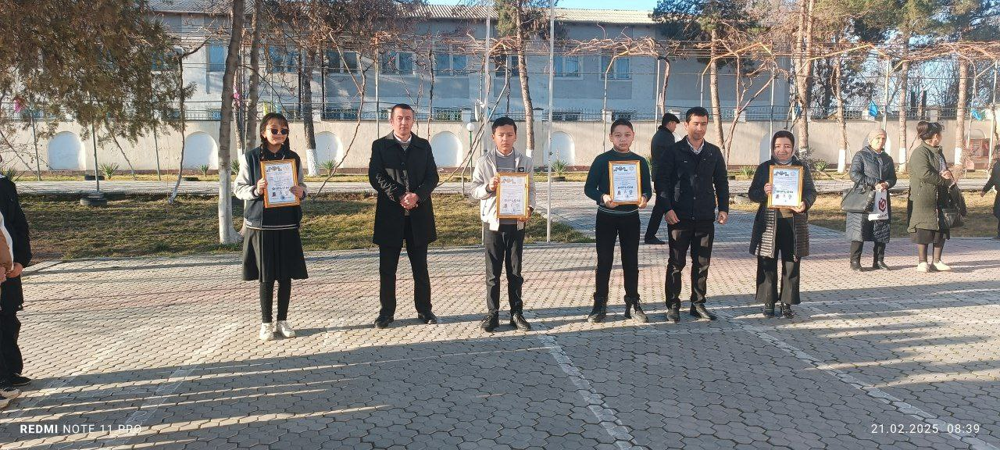

#Qamashi_IM - Zakovat Turniri G‘oliblarini Taqdirlash
Qamashi tumani ixtisoslashtirilgan maktabida buyuk mutafakkirlar Alisher Navoiy va Zahiriddin Muhammad Bobur tavalludi munosabati bilan o‘tkazilgan Katta Zakovat turniri g‘oliblari bugun ertalabki saflanish tadbirida tantanali ravishda taqdirlandi.
G‘olib jamoalar quyidagi tartibda diplom bilan taqdirlandi:
- 1-o‘rin – 8-“B” sinfi "The Best Boy" jamoasi
- 2-o‘rin – Ustozlar jamoasi
- 3-o‘rin – 6-“A” sinfi "Mantiq tarixchilari" va 7-“B” sinfi "Adabiyot shaydolari" jamoalari
Taqdirlash marosimida ishtirokchilar ushbu turnir ularning bilim va intellektual salohiyatini oshirishda muhim o‘rin tutganini ta’kidlab, bunday musobaqalar muntazam tashkil etilishini tilab qoldilar.
